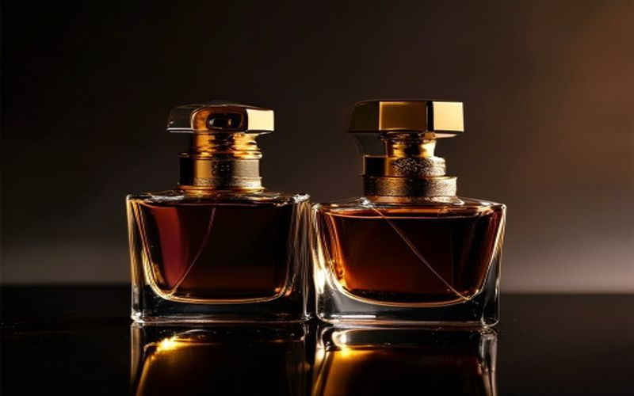
Dupes
Meilleur Dupe Baccarat Rouge 540 : Guide Complet 2025
On a testé les 7 meilleures alternatives au mythique BR540. Khamrah, Cloud, Burberry Her — notre verdict détaillé.
Guides experts, comparatifs honnêtes et découvertes olfactives.

On a testé les 7 meilleures alternatives au mythique BR540. Khamrah, Cloud, Burberry Her — notre verdict détaillé.
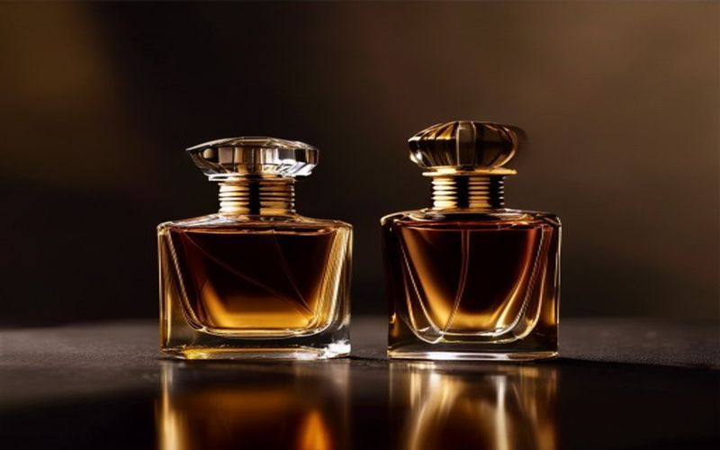
Sauvage reste le parfum le plus vendu au monde, mais à 100€+, les alternatives valent le détour. Voici nos favoris.
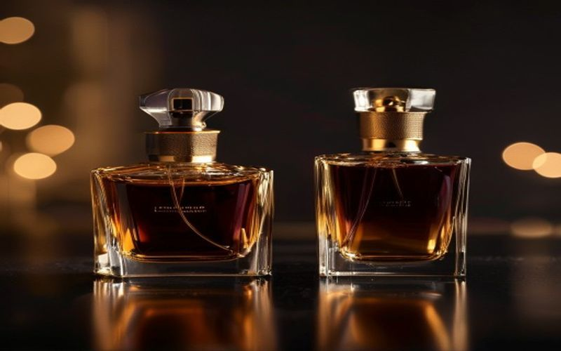
Tobacco Vanille, Oud Wood, Lost Cherry — chaque hit de Tom Ford a son double oriental. Notre guide complet.
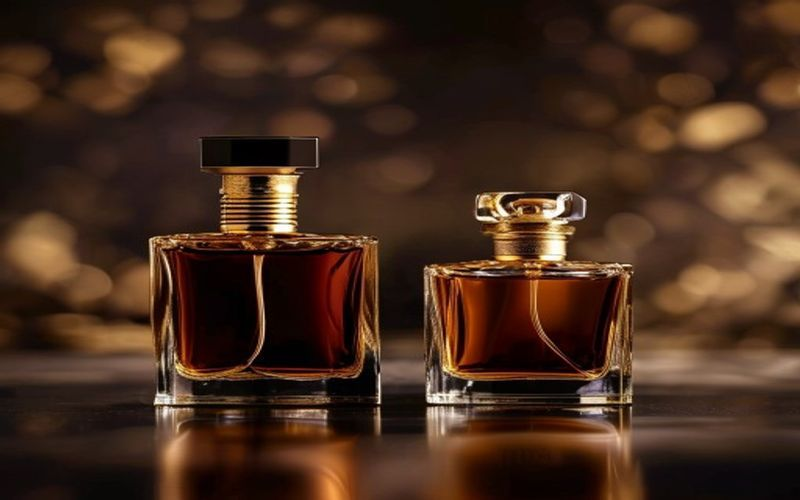
Découvrez les meilleures dupes d'Aventus Creed pas cher ! Notre guide expert de Boutique Takwa révèle les alternatives abordables qui capturent l'essence du myt
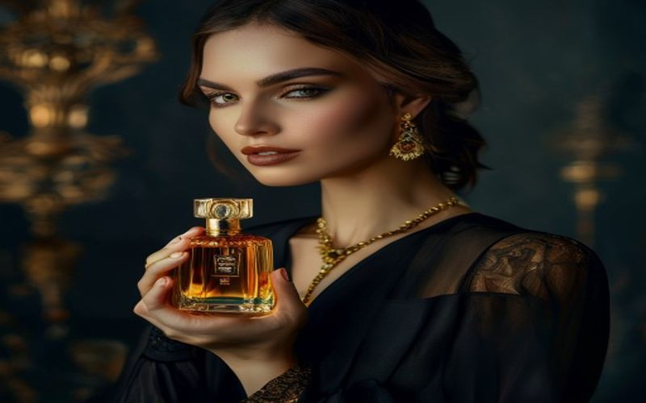
Découvrez comment trouver le parfum pas cher femme dupe qui imite vos fragrances de luxe préférées. Boutique Takwa vous guide vers des trésors olfactifs abordab
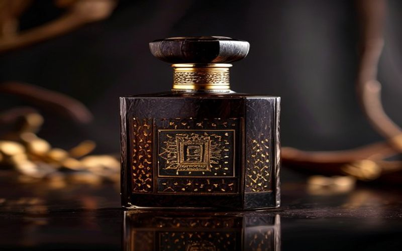
Découvrez les meilleurs dupes de parfums pour homme pas chers qui rivalisent avec les plus grands noms du luxe. Élégance et économies avec Boutique Takwa.
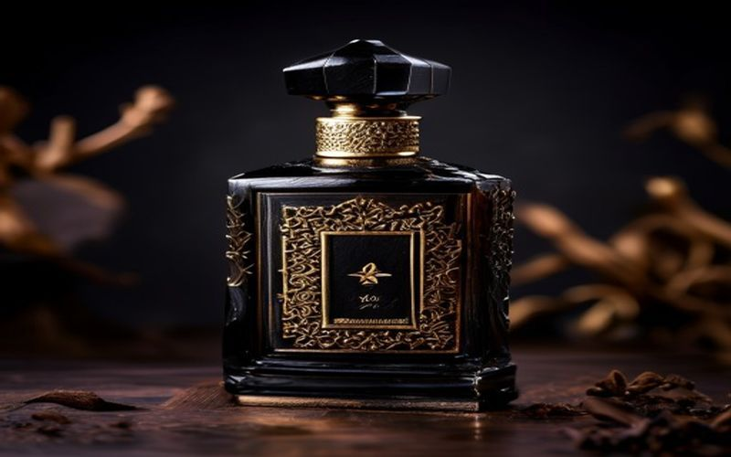
Découvrez notre guide ultime du meilleur dupe parfum homme. Des fragrances de luxe abordables aux dupes orientaux puissants. Trouvez votre sillage chez Boutique
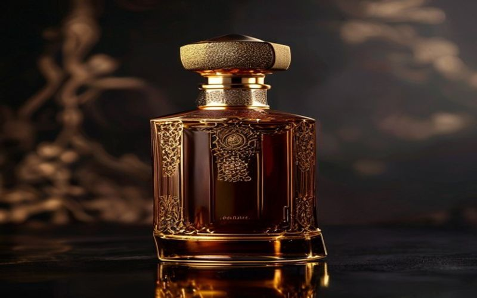
De Khamrah à Raghba, Lattafa domine le marché des parfums orientaux abordables. Notre sélection experte.
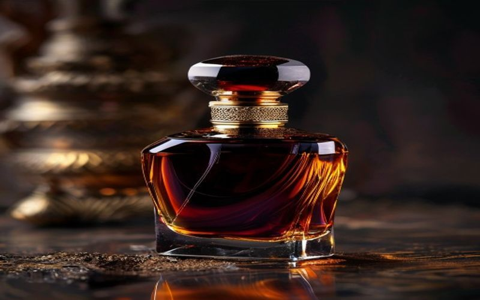
L'oud est l'ingrédient roi de la parfumerie orientale. Voici comment le choisir et nos recommandations.
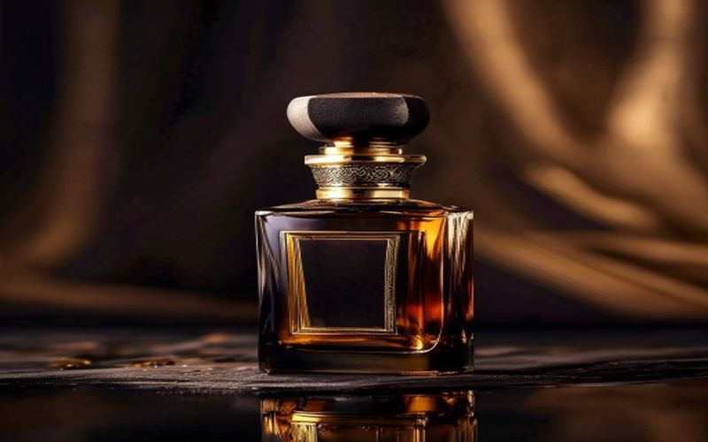
De Lattafa à Armaf en passant par Afnan, les parfums arabes offrent un rapport qualité-prix imbattable.
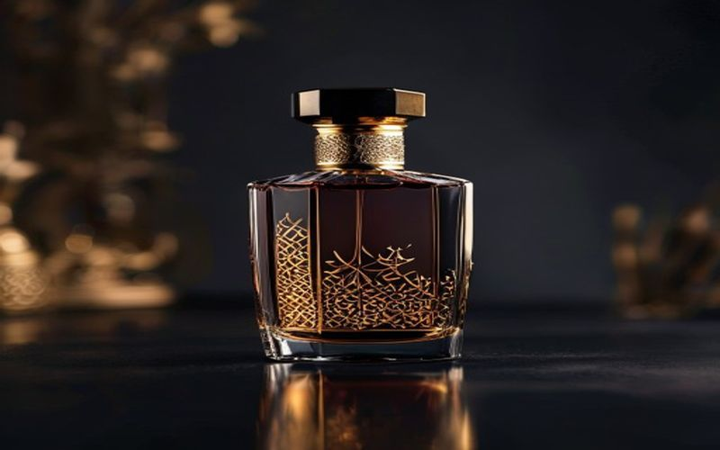
Décryptez Lattafa Yara : notes, tenue, sillage, et l'expérience unique de ce parfum oriental culte. Notre avis complet et guide d'achat par Boutique Takwa.
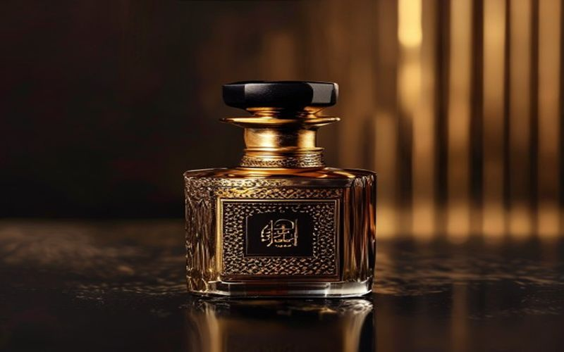
Découvrez l'avis complet et détaillé sur Lattafa Yara : ses notes fruitées et gourmandes, sa tenue, son sillage, et où l'acheter au meilleur prix chez Boutique
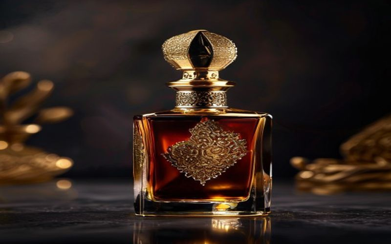
Deux géants du parfum gourmand-oriental. Lequel mérite votre argent ?
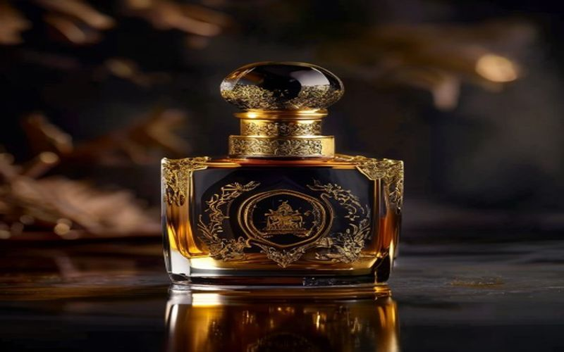
Lattafa Asad est-il vraiment un clone de Sauvage Elixir ? Notre analyse complète.
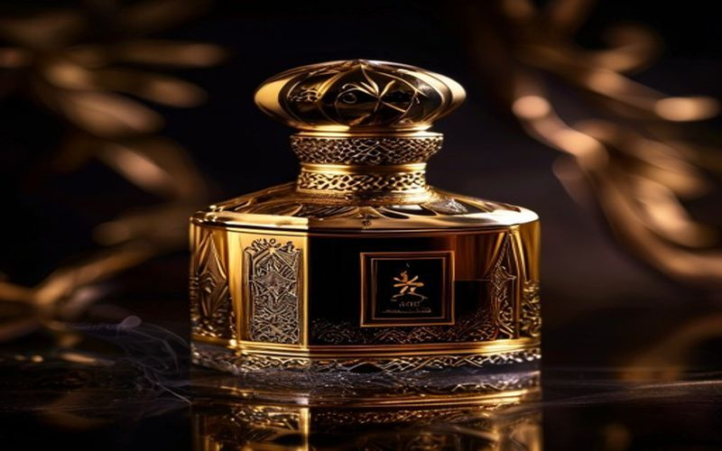
Armaf CDNIM est considéré comme le meilleur clone d'Aventus. Est-ce vraiment mérité ?
Découvrez le meilleur dupe parfum femme pour des fragrances luxueuses sans vous ruiner. Votre guide expert par Boutique Takwa pour des senteurs orientales irrés
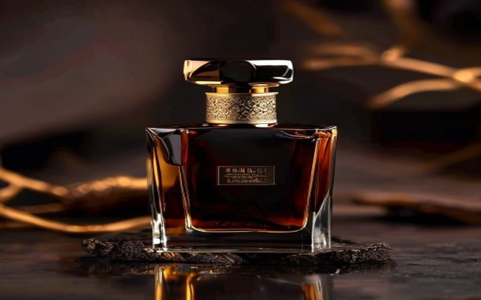
Découvrez les meilleurs dupes de parfums pour homme disponibles chez Action. Obtenez des fragrances de luxe à prix mini. Boutique Takwa vous guide vers l'élégan
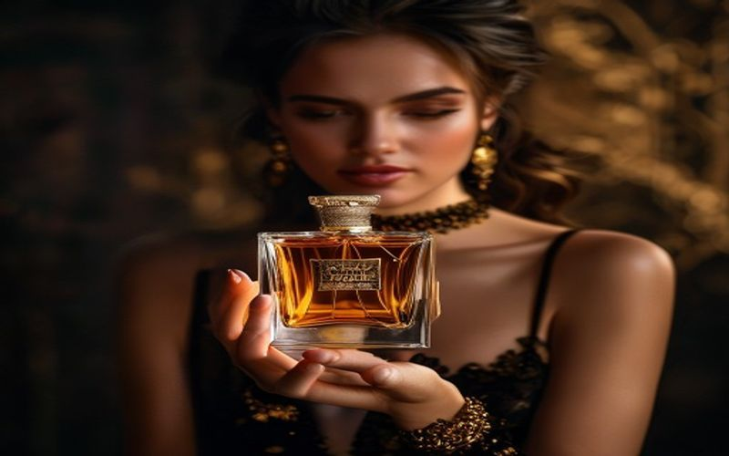
Découvrez les meilleures fragrances orientales pour femme en 2025 : prix, notes olfactives et conseils pour choisir votre signature.

Plongez dans l'univers du parfum oud avec ce guide complet : meilleures fragrances d'entrée de gamme, notes clés et conseils d'achat.
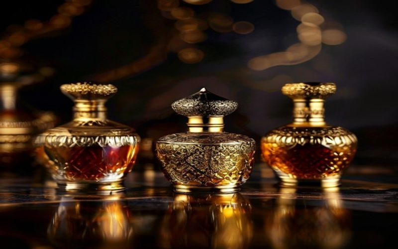
Nos conseils pour trouver un parfum oriental qui tient 12h+. Concentration, famille olfactive, application — tout ce qu'il faut savoir.
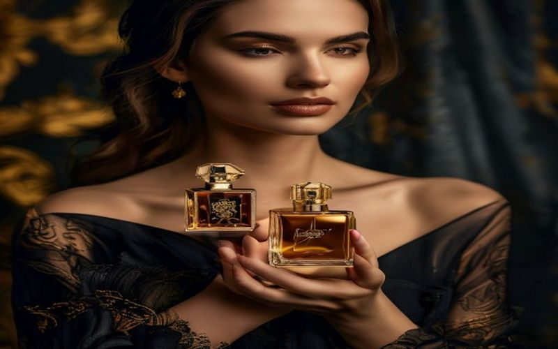
Découvrez notre guide exclusif des meilleurs parfums arabes pour femme en 2025. Élevez votre sillage avec des senteurs luxueuses et envoûtantes. Trouvez votre c
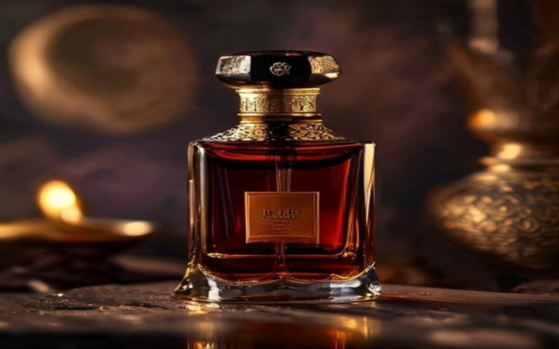
Découvrez l'univers fascinant du parfum oud. Notre guide complet vous aide à choisir votre premier oud, avec conseils, prix et sélections pour débutants. Trouve
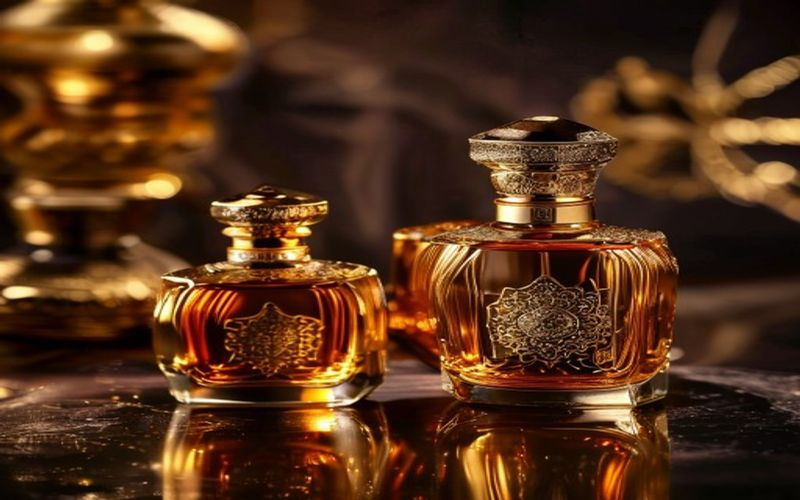
Découvrez les secrets des parfums orientaux qui tiennent longtemps. Notes, application, et astuces pour un sillage captivant toute la journée. Votre guide ultim

Explorez le top des meilleurs parfums Lattafa 2025. Ce guide révèle les trésors orientaux, dupes de luxe et nouveautés incontournables. Trouvez votre fragrance
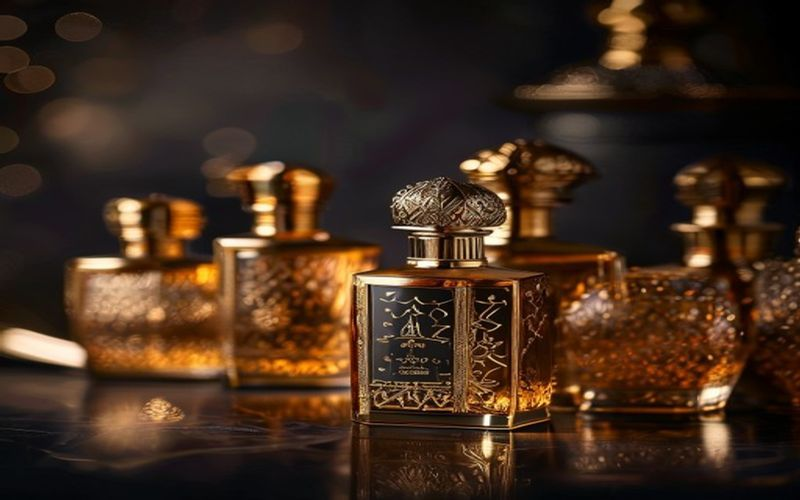
Découvrez les meilleurs parfums de Dubaï pour 2025. Guide expert par Boutique Takwa sur les tendances, dupes de luxe et fragrances orientales incontournables.
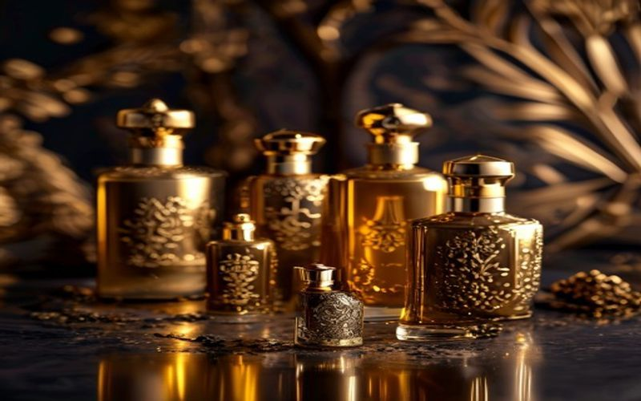
Découvrez notre sélection exclusive des 10 meilleurs parfums de Dubaï qui marqueront 2025. Plongez dans les senteurs orientales et les dupes de luxe avec Boutiq